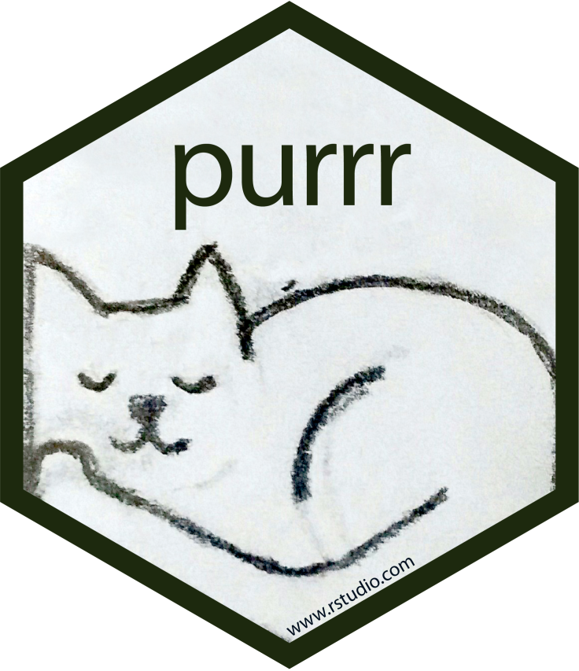

Chapter 11 Iteration

11.1 Code Duplication
Code duplication is a significant problem in programming that should be avoided whenever possible. When you notice repetitive code within your script, it is generally not an ideal situation. Repeating the same code in multiple places can lead to difficulties in maintaining and debugging your script.
When the same code chunk is repeated in multiple places, it becomes challenging to track and update. If a bug is discovered or an improvement is needed, you have to make changes in every instance of the duplicated code, which is time-consuming and error-prone. It also makes the script harder to understand for other developers, as they have to navigate through redundant code segments.
To mitigate these issues, it is advisable to refactor the duplicated code into reusable functions or modules. By encapsulating the common functionality in a single place, you can reduce redundancy and improve code maintainability. In short, there are generally two major ways to reduce duplication in coding:
- Wrap the duplicate procedures into a function
- Use iteration structure in script
In this chapter, we will talk about code efficiency. In particular, we will work with the library purr.
According to Wickham & Grolemund (2017) Chapter 21 Iteration, there are three main advantages of reducing code duplication:
- It’s easier to see the intent/objective of your code, because your eyes are drawn to what’s different, not what stays the same.
- It’s easier to respond to changes required for code maintenance. Without much code duplication, you only need to make changes in one place, rather than remembering to change every place that you have copied-and-pasted the code.
- You’re likely to have fewer bugs because each line of code is used in more places.
11.2 Vectorizaed Functions: Vector vs. List
Most of the R-internal functions are vectorized. By default, if we apply a function to a multi-element vector, R will automatically apply the same procedure to all elements of the vector all at once, and return the results of the same vector’s length.
a.vec <- c(1:10)
## `sqrt()` is applied to all elements of the vector one by one
sqrt(a.vec) [1] 1.000000 1.414214 1.732051 2.000000 2.236068 2.449490 2.645751 2.828427
[9] 3.000000 3.162278## `round()` is applied to all elements of the vector one by one
round(sqrt(a.vec), 2) [1] 1.00 1.41 1.73 2.00 2.24 2.45 2.65 2.83 3.00 3.16The concept of a vectorized function in R is important here. A vectorized function is designed to operate on an entire vector (or multiple vectors) as a whole, performing the same operation on each element simultaneously. It leverages the internal optimizations in R to process the vector efficiently, resulting in faster and more concise code.
But this is NOT something we can do with a list:
a.list <- list(1, 2, 3, 4, 5, 6, 7, 8, 9, 10)
sqrt(a.list)Error in sqrt(a.list): non-numeric argument to mathematical functionYou may now recall that in Chapter 5 , we have introduced the control structure of for-loop, which allows us to perform a specific procedure to every element of a list.
a.list <- list(1, 2, 3, 4, 5, 6, 7, 8, 9, 10)
results <- vector() # empty list holder
for(i in 1:length(a.list)){
results[i] <- sqrt(a.list[[i]])
}
results [1] 1.000000 1.414214 1.732051 2.000000 2.236068 2.449490 2.645751 2.828427
[9] 3.000000 3.162278In this chapter, we will explore more efficient ways of iterating over non-vector objects such as lists and data frames.
11.3 Iteration
Because we often work with list and data.frame (tibble) objects in R, it would be great if we can have a straightforward approach for performing the same procedure on:
- Each element in the
list - Each row in the
data.frame - Each column in the
data.frame
These three scenarios are the most-often used contexts for iteration (i.e., iterating over data structures).
Let’s start with a example. We first create a pseudo data set, i.e., a list with students’ grades from five different classes.
exams.list <- list(
class1 = round(runif(30, 0, 100)), # 30 tokens of random numbers in the range <0, 100>
class2 = round(runif(30, 0, 100)),
class3 = round(runif(30, 0, 100)),
class4 = round(runif(30, 0, 100)),
class5 = round(runif(30, 0, 100))
)
exams.list$class1
[1] 98 1 4 36 50 13 60 70 75 81 63 64 89 76 48 70 76 57 93 52 74 54 4 51 80
[26] 85 10 67 13 4
$class2
[1] 96 0 31 29 59 22 4 71 100 70 74 33 16 21 29 57 74 2 49
[20] 6 61 81 42 4 84 66 11 76 0 60
$class3
[1] 39 46 52 87 26 57 84 98 69 11 60 28 26 37 28 2 14 100 92
[20] 20 22 41 48 12 31 31 12 97 84 73
$class4
[1] 20 22 3 18 90 45 6 46 74 54 48 41 90 29 77 12 79 38 26 29 14 20 54 76 41
[26] 92 58 6 34 34
$class5
[1] 3 64 12 97 15 94 29 80 20 2 62 89 38 18 11 35 17 14 60 19 70 48 89 97 50
[26] 30 87 87 36 68If we want to compute the mean scores of each cluster, you probably want to use mean():
mean(exams.list)[1] NAIt should be clear now that mean() expects a numeric vector, on which the mean score is computed.
So you might wonder, why not take a simple approach?
We can calculate the mean scores for each class and store all five scores in a list:
set.seed(123) # Make sure we get the same results
exams.list.means <- list(
class1mean = mean(exams.list$class1),
class2mean = mean(exams.list$class2),
class3mean = mean(exams.list$class3),
class4mean = mean(exams.list$class4),
class5mean = mean(exams.list$class5)
)
exams.list.means$class1mean
[1] 53.93333
$class2mean
[1] 44.26667
$class3mean
[1] 47.56667
$class4mean
[1] 42.53333
$class5mean
[1] 48.03333The disadvantage is obvious: (a) what if you have 10 classes? 100 classes? (b) what if now you decide to compute standard deviation?
The rule-of-thumb is that the more you find code duplication in your script, the more likely you need to restructure your codes with iterations.
11.4 purr
library(tidyverse)Now let’s take a look at how iteration structures can help us with repeated procedures.
map(exams.list, mean)$class1
[1] 53.93333
$class2
[1] 44.26667
$class3
[1] 47.56667
$class4
[1] 42.53333
$class5
[1] 48.03333## Or, alternatively:
# exams.list %>% map(mean)With only one-line code, you can apply a function to each element of a data structure and obtain the results as a new data structure of the same type. It simplifies the process of applying a function iteratively and collecting the output at the same time.
map() is a very powerful function to do iteration. Its usage is as follows:

Let’s break down the code map(exams.list, mean) and explain it concisely:
- The
map()function is used to apply themeanfunction to each element in theexams.list. - The result of applying
meanto the first element is stored as the first element in a new list. - Similarly, the result of applying
meanto the second element is stored as the second element in the new list. - This process continues for each element in the
exams.list. - Finally, the function returns a list containing all the computed mean values.
In the purrr package, the map() function defaults to returning the result as a list. However, you can use other variants of the mapping function, like map_dbl() for a double vector, map_int() for an integer vector, or map_chr() for a character vector, to specify a different output data structure. These variants allow you to tailor the output format based on your specific requirements.

## apply `mean()` to all elements of `exam.list`
## and return the output as data frame
map_df(exams.list, mean)## apply `mean()` to all elements of `exam.list`
## and return the output as a double/numeric vector
map_dbl(exams.list, mean) class1 class2 class3 class4 class5
53.93333 44.26667 47.56667 42.53333 48.03333 In R, the apply() function, along with its variants like lapply() and sapply(), is a native R function used for applying a function to a specific data structure. These native R functions are very similar to map() in purrr library.
Here’s a brief comparison between apply() and map() from the purrr library:
apply(): It is primarily used with matrices or multidimensional arrays. It applies a function to either rows or columns of the matrix or array, aggregating the results. It is efficient for handling structured data and performing calculations across dimensions.lapply(): It applies a function to each element of a list or vector and returns a list of results. It is commonly used for iterative operations on lists and allows you to process each element individually.sapply(): It is similar tolapply()but simplifies the result by attempting to convert it into a more convenient format, such as a vector or matrix. It is useful when you want a simplified output and don’t necessarily need a list structure.map()(from purrr): It is part of the purrr library, which is an extension of the apply family of functions.map()provides a consistent and powerful approach to iterate over elements in various data structures, including lists, data frames, and vectors. It returns a list as the output, allowing you to work with the results in a flexible manner.
In summary, while the native R functions like apply(), lapply(), and sapply() provide useful ways to iterate over data structures, map() from the purrr library offers additional flexibility and consistency when working with lists, data frames, and vectors. It is particularly beneficial when you need to apply a function to multiple elements and handle the results in a list format.
Exercise 11.1 Use the same dataset, exam.list, and compute the median and standard deviation values for each class. Have these values returned as vectors.
- Median
class1 class2 class3 class4 class5
61.5 45.5 40.0 39.5 43.0 - Standard Deviation
class1 class2 class3 class4 class5
29.80388 31.29056 30.08572 26.88383 31.87528 Exercise 11.2 Similar to the previous exercise, how can you use the same dataset, exam.list, to compute the median and standard deviation values for each class, and have both of these values returned as a data.frame (The first row refers to the median values and the second row refers to the standard deviation values.)
Please use map_df() to produce the following expected result.
11.5 purr + dplyr
When working with data frames in R, the map() function from the purrr library can be a powerful and efficient tool for data manipulation. When used in combination with the mutate() function from the dplyr package, it allows for seamless transformation of columns in a data frame.
Specifically, in the context of data frame, map() can be used to apply a function to a column or a selected set of columns. Therefore, by combining map() with mutate(), we can efficiently apply a function to each column of a data frame and generate new columns based on the results.
To illustrate this usage, let’s look at an example of the four-character idioms dataset from the previous chapter.
## reading utf8 file
con <- file(description = "demo_data/dict-ch-idiom.txt",
encoding = "utf-8")
texts <- readLines(con)
close(con)
## convert into data frame
idiom <- data.frame(string = texts)
idiomNow if we would like to find out whether each idiom has duplicate characters in it, we can make use of regular expressions:
## Take a look at the first ten idioms
x <- idiom$string[1:10]
## Check whether they have repeated characters
str_detect(x, ".*(.).*\\1.*") [1] FALSE FALSE FALSE FALSE FALSE FALSE TRUE TRUE TRUE FALSEWhat if we would like to include this information as an independent (new) column of data frame, idiom?
Two important things should pop up in your mind:
- We need
mutate()to help us create a new column - We need to apply the above procedure,
str_detect(), to each element in the columnidiom$string.
idiom %>%
mutate(duplicate = str_detect(string, ".*(.).*\\1.*")) %>%
filter(duplicate)So far, we do not have to use map() because str_detect() is a vectorized function, i.e., when it takes a vector as its input, it performs the pattern matching for all the elements of the input string vector, and outputs a vector, which can be a perfect candidate for a new column.
Now, what if we would like to identify idioms including animal characters and create a new column that shows the number of animal characters for these idioms?
It is clear that we need to use str_extract_all() to extract all possible matches from each idiom. And it should also be clear that the output of str_extract_all() is a list.
## Regex patter for animal characters
pat <- "[鼠牛虎兔龍蛇馬羊猴雞狗豬]"
## Output of str_extract_all
output <- str_extract_all(idiom$string, pat)
## Example
idiom[895,][1] "白馬非馬"output[895][[1]]
[1] "馬" "馬"So now the question is: how can we get the information (i.e., the number of animal characters) from the output of str_extract_all() and add this information to the existing data frame as a new column?
And the hint is clear: you need to make use of the iteration function: map().
See if you are able to produce an output as shown below using the code template provided:
## Code Template
idiom %>%
mutate(animals = str_extract_all(......)) %>% ## extract matches
mutate(num_animal = map(......)) %>% ## compute number of matches
filter(......) %>% ## remove idioms with no matches
select(-animals) ## remove irrelevant columnsExercise 11.3 This exercise will use the subset of idiom, which include only four-word idioms with at least one duplicate character in them.
Please create a new column, showing how many types of duplications there are in each idiom?
For example, in 阿狗阿貓, there is only one duplicate character 阿; but in 矮矮胖胖, there are two duplicate characters, 矮 and 胖.
Exercise 11.4 Continuing the previous exercise, please create another new column, showing all the duplicate characters in each idiom.
For example, in 阿狗阿貓, the duplicate character is 阿; but in 矮矮胖胖, the duplicate character is矮_胖.
That is, if the idiom has more than one duplicate character, please use the _ as the delimiter and concatenate all duplicate characters into a long string.
Exercise 11.5 Based on the previous exercise, please analyze the distribution of all the duplicate characters in the four-character idioms included in the dictionary (i.e., the duplicate_char column from the previous exercise) and identify the top 20 duplicate characters. Please visualize your results in a bar plot with both the top 20 duplicate characters as well as the number of the character’s duplications in the idiom.

11.6 map() with self-defined functions
With the power and flexibility of purrr::map(), we can basically do everything iteratively. More attractively, we can apply a self-defined function as well! (Please see Chapter 6 for how to create a self-defined function in R.)
A function object is defined using the following template:
FUNCTION_NAME <- function(ARG1, ARG2) {
THINGS TO BE DONE WITHIN THE FUNCTION
return(...)
}A function object usually include:
- Self-defined name
- Arguments
- Return
Let’s consider a simple example.
First we create a self-defined function my_center():
- This function takes a vector object
x - Subtract each element of
xby the mean score ofx - return the resulting vector as the output of the function
my_center <- function(x) {
x - mean(x)
}Now we can apply our my_center function to each class in exams.list:
map_df(exams.list, my_center)Exercise 11.6 Use the built-in the mtcars dataset (?mtcars for more detail).
How do you get the class type of each column in the mtcars by using map()?
Exercise 11.7 Create a self-defined function to convert each number of a numeric vector to a “z” score.
y <- c(1, 4, 6, 10, 20)
my_z(y)[1] -0.9779865 -0.5704921 -0.2988292 0.2444966 1.6028112Exercise 11.8 Use the earlier dataset exams.list. For each element in exams.list, please convert the student’s score to a z-score by applying your self-defined function in an iterative structure (e.g., map).
Please present the result as a data frame.